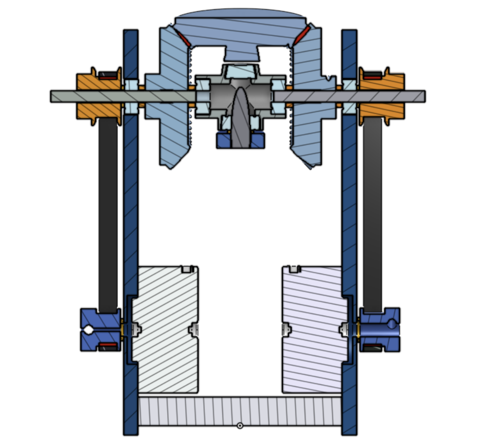
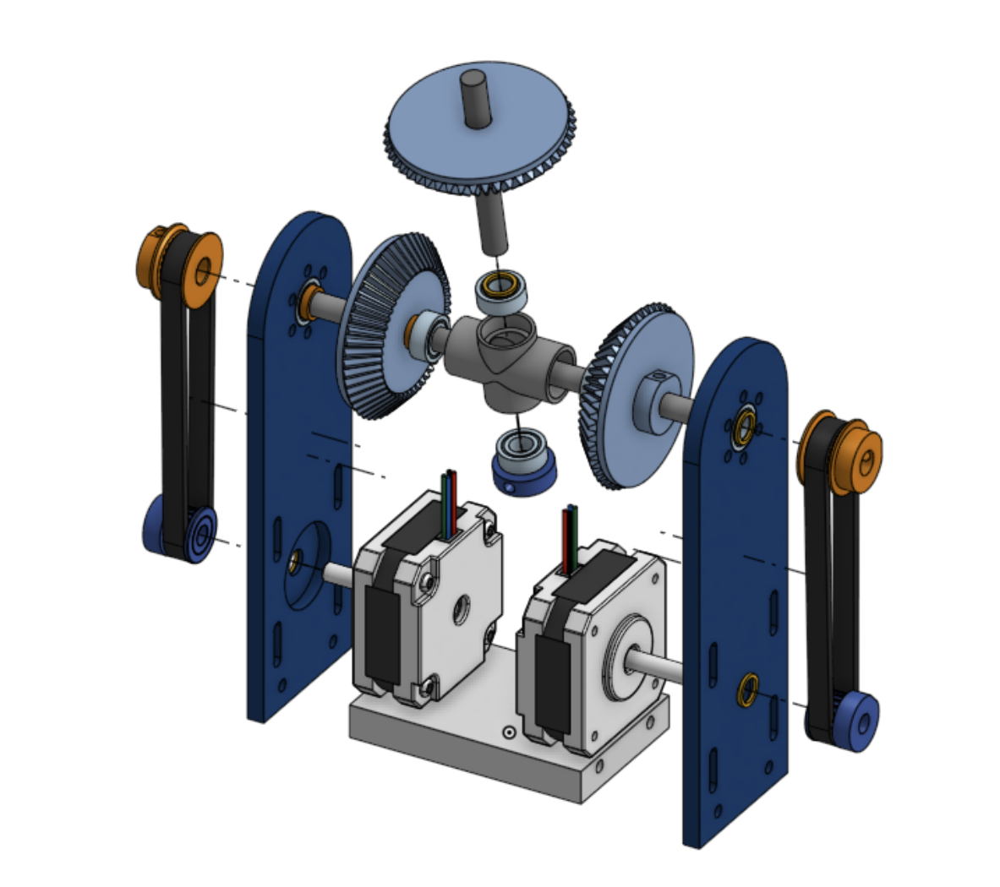

Project 04 / Robotics mechanism
Differential Wrist Mechanism
A compact end-effector wrist prototype completed in a two-day CAD-to-hardware cycle, driven by two NEMA 17 stepper motors and controlled with Arduino.

Challenge
Small package, real actuation.
The design had to make differential wrist motion compact enough for a future multi-axis arm while still leaving room for motors, gears, bearings, housings, and mounting features. The project compressed the full loop into two days: calculate, model, print, finish, assemble.
Contribution
From ratio math to prototype.
Kyle calculated pulley and gear ratios from scratch, designed the CAD assembly, produced custom 3D printed components, finished parts on the machine-shop lathe, and integrated the stepper-driven layout.
Define a differential wrist layout that could support a compact robotic end effector.
Model gears, housings, bearing supports, motor mounting, and future arm interfaces.
3D print custom parts, finish key surfaces, and assemble the prototype.
Prepare the mechanism for Arduino-controlled NEMA 17 actuation.
Technical evidence
CAD and hardware.
The available artifacts show the mechanism at both design and prototype stages: differential gearing arrangement, motor placement, and the physical assembled wrist.


Reflection
Fast loops expose interfaces.
The project reinforced how much mechatronics depends on physical interfaces: motors, bearings, gears, housings, and control choices all constrain each other. A next iteration would spend more time on test instrumentation and backlash characterization.